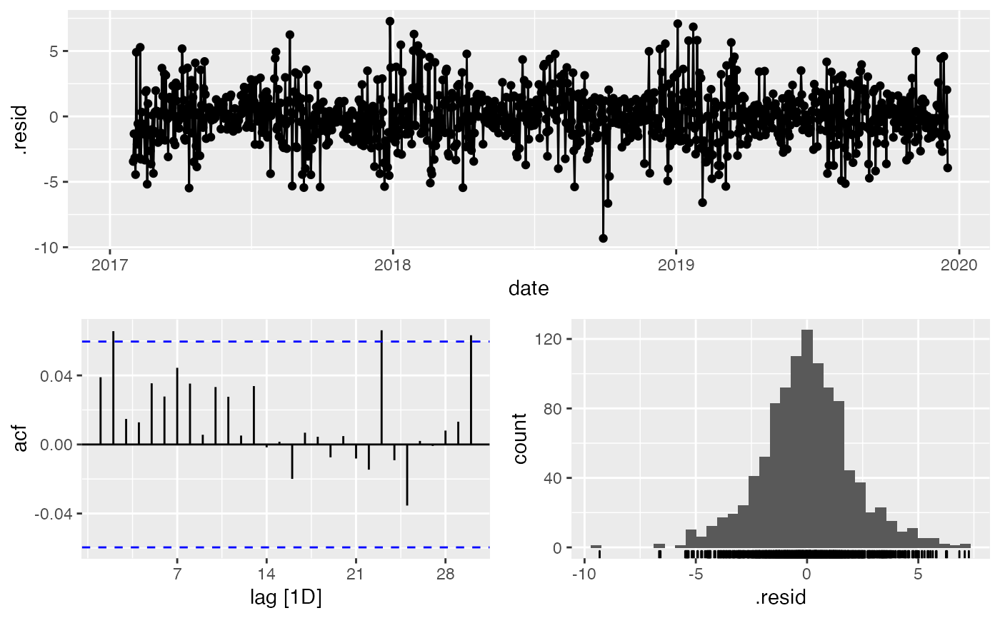

DayWModelPicker.RdFunction to choose optimal daily seasonal forecast model
DayWModelPicker(data, Outcome, DateVar, H.Horizon = 14)
| data | A daily tsibble. |
|---|---|
| Outcome | A valid variable name for the Outcome to be modelled in in `data`. |
| DateVar | A valid variable name for the time index in `data`. |
| H.Horizon | An integer for the forecast horizon/test subset of `data`. |
A list containing:
Accuracy.Table: accuracy for the forecast horizon against the test sample.
test: the test set
train: the training set
Model.Fits: the model fits
Model.Forecasts: the forecasts
Min.Model: the minimum model by MAE
Min.Report: the minimum model report
Min.Res.Plot NW: the gg_tsdisplay for the minimum model
Min.Forecast.Plot NW: a plot of the minimum forecast by MAE
#> Warning: Current temporal ordering may yield unexpected results. #> ℹ Suggest to sort by ``, `date` first.#>#> Series: TX #> Model: LM w/ ARIMA(0,1,3) errors #> #> Coefficients: #> ma1 ma2 ma3 fourier(K = 1)C1_7 fourier(K = 1)S1_7 #> -0.2211 -0.2975 -0.1758 -0.0092 -0.3660 #> s.e. 0.0298 0.0302 0.0294 0.3355 0.3353 #> #> sigma^2 estimated as 31.27: log likelihood=-3389.31 #> AIC=6790.62 AICc=6790.7 BIC=6820.53#> $test #> # A tsibble: 14 x 8 [1D] #> YR MO Day TX TN PR SN date #> <int> <int> <chr> <dbl> <dbl> <dbl> <dbl> <date> #> 1 2019 12 18 43 32 0.18 0 2019-12-18 #> 2 2019 12 19 57 38 0.64 0 2019-12-19 #> 3 2019 12 20 59 50 0.4 0 2019-12-20 #> 4 2019 12 21 51 43 0.88 0 2019-12-21 #> 5 2019 12 22 46 42 0.17 0 2019-12-22 #> 6 2019 12 23 48 35 0.09 0 2019-12-23 #> 7 2019 12 24 40 32 NA 0 2019-12-24 #> 8 2019 12 25 44 31 0.02 0 2019-12-25 #> 9 2019 12 26 46 27 NA 0 2019-12-26 #> 10 2019 12 27 45 37 0.01 0 2019-12-27 #> 11 2019 12 28 48 40 0 0 2019-12-28 #> 12 2019 12 29 48 40 NA 0 2019-12-29 #> 13 2019 12 30 48 40 0 0 2019-12-30 #> 14 2019 12 31 51 40 0.22 0 2019-12-31 #> #> $train #> # A tsibble: 1,081 x 8 [1D] #> YR MO Day TX TN PR SN date #> <int> <int> <chr> <dbl> <dbl> <dbl> <dbl> <date> #> 1 2017 1 1 40 32 0.05 NA 2017-01-01 #> 2 2017 1 2 35 29 0 0 2017-01-02 #> 3 2017 1 3 34 27 0 0 2017-01-03 #> 4 2017 1 4 33 27 0 0 2017-01-04 #> 5 2017 1 5 35 17 0 0 2017-01-05 #> 6 2017 1 6 34 17 0 0 2017-01-06 #> 7 2017 1 7 30 24 0.02 0.4 2017-01-07 #> 8 2017 1 8 34 28 0.53 0 2017-01-08 #> 9 2017 1 9 41 30 0.28 0 2017-01-09 #> 10 2017 1 10 38 31 0.65 6.5 2017-01-10 #> # … with 1,071 more rows #> #> $Model.Fits #> # A mable: 1 x 10 #> `K = 1` `K = 2` #> <model> <model> #> 1 <LM w/ ARIMA(0,1,3) errors> <LM w/ ARIMA(0,1,3) errors> #> # … with 8 more variables: K = 3 <model>, ARIMA <model>, ETS <model>, #> # NNET1 <model>, NNET2 <model>, NNET3 <model>, prophet <model>, #> # Combo1 <model> #> #> $Model.Forecasts #> # A fable: 140 x 4 [1D] #> # Key: .model [10] #> .model date TX .mean #> <chr> <date> <dist> <dbl> #> 1 K = 1 2019-12-18 N(43, 31) 43.5 #> 2 K = 1 2019-12-19 N(45, 50) 44.9 #> 3 K = 1 2019-12-20 N(46, 57) 45.8 #> 4 K = 1 2019-12-21 N(46, 60) 45.7 #> 5 K = 1 2019-12-22 N(46, 63) 45.9 #> 6 K = 1 2019-12-23 N(46, 66) 46.3 #> 7 K = 1 2019-12-24 N(46, 69) 46.5 #> 8 K = 1 2019-12-25 N(46, 72) 46.4 #> 9 K = 1 2019-12-26 N(46, 75) 46.1 #> 10 K = 1 2019-12-27 N(46, 78) 45.8 #> # … with 130 more rows #> #> $Accuracy.Table #> # A tibble: 10 x 10 #> .model .type ME RMSE MAE MPE MAPE MASE RMSSE ACF1 #> <chr> <chr> <dbl> <dbl> <dbl> <dbl> <dbl> <dbl> <dbl> <dbl> #> 1 ARIMA Test 2.26 5.55 3.80 3.73 7.43 NaN NaN 0.468 #> 2 Combo1 Test 3.12 5.95 4.15 5.53 8.04 NaN NaN 0.446 #> 3 ETS Test 3.98 6.45 4.64 7.33 8.97 NaN NaN 0.423 #> 4 K = 1 Test 2.34 5.56 3.80 3.90 7.41 NaN NaN 0.478 #> 5 K = 2 Test 2.26 5.54 3.82 3.74 7.47 NaN NaN 0.475 #> 6 K = 3 Test 2.33 5.56 3.81 3.88 7.43 NaN NaN 0.481 #> 7 NNET1 Test 3.92 6.45 4.46 7.28 8.49 NaN NaN 0.346 #> 8 NNET2 Test 3.70 6.16 4.32 6.98 8.34 NaN NaN 0.417 #> 9 NNET3 Test 3.54 6.06 4.50 6.51 8.74 NaN NaN 0.385 #> 10 prophet Test 4.15 6.37 4.93 7.73 9.63 NaN NaN 0.337 #> #> $Min.Model #> # A tibble: 1 x 10 #> .model .type ME RMSE MAE MPE MAPE MASE RMSSE ACF1 #> <chr> <chr> <dbl> <dbl> <dbl> <dbl> <dbl> <dbl> <dbl> <dbl> #> 1 K = 1 Test 2.34 5.56 3.80 3.90 7.41 NaN NaN 0.478 #> #> $Min.Report #> # A mable: 1 x 1 #> `K = 1` #> <model> #> 1 <LM w/ ARIMA(0,1,3) errors> #> #> $Min.Res.Plot #>